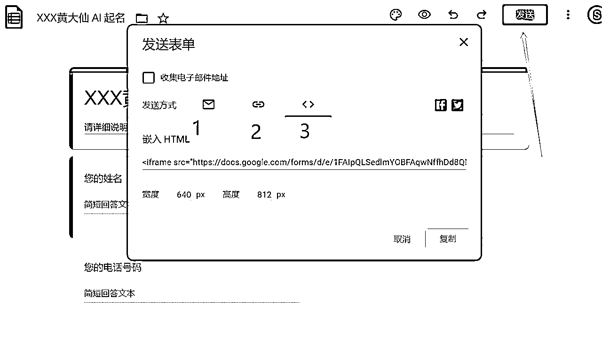

来源：https://sbu67xqbm4.feishu.cn/docx/KVYSdKgmIoQxCLxdIkrcKW0Snze
ChatGPT虽然这么火，但是，实际上大部分人都没能参与进去，如何参与到这里面去，那要么提高生产力，要么就是直接商业变现啊。那么思路呢？
今天分享一个结合ChatGPT自动化提高生产力和商业变现的方法/流程，以自动化商业变现的实操为例，即使不是程序员，也可以百倍提高业务。
为什么不说RPA，也不说编程? 因为RPA对于大部分圈友来说，还是有门槛的，更不要说编程了。但是商业运用ChatGPT本身的一部分目的就是为了提高生产力，放弃了自动化，等于砍了ChatGPT商业应用的半条腿。
希望本文能够抛砖引玉，帮助所有读到的圈友都能实现自己的业务跃迁。
1、探索通过ChatGPT 自动化商业变现的圈友；
2、探索通过ChatGPT 自动化提高生产力的圈友；
3、大部分无代码能力的圈友；
一句话说明白，就是自动采集需求，通过ChatGPT API 传送给 ChatGPT，ChatGPT加工后，输出结果，利用自动化工具进行回复/存储/发布，甚至调用手机硬件或者使用WEBHOOK，或者联动IFTTT触发智能硬件的应用。相当于一个半定制的RPA。
扩展思路：这不局限于自动化为客户提供收费咨询服务，免费引流，也可以采集信息后归纳加工为自己的素材，或者直接发布到社交平台上，当然也可以应用在社群、公众号中，作为小助理使用。重要的是，工具基本免费。
重点（要圈起来）：这里通过示例展示提供的是思路
作为普通人，无代码工具是最佳的选择，最重要的是你如何和自己的业务场景结合起来，充分利用自己的业务流与工具结合起来，为自己提高生产力，或者直接变现。
示例的目标是，自动化为客户提供自动付费咨询或者调研的初步反馈。过程是利用谷歌表单采集用户需求，自动转为谷歌表格字段，利用make等平台的工作流，接入ChatGPT API来生产，输出内容传输回谷歌表格，再通过工具（例如whatsapp短信、邮件等）自动传送给客户或自己。
示例的工作流：
1、使用表单采集用户提供的文字内容，并使用表格存储
2、ChatGPT 处理文字信息，按需求进行加工
3、加工的信息存储到表格
4、通过邮件或短信交付给客户
示例操作如下（如要中文显示，可以使用google一键翻译）：
1、谷歌Google Forms 或者Notion等有表单服务的平台
2、ChatGPT API Key和Organizaiton ID
3、准备一个邮箱，gmail或者outlook等都可
4、注册make.com（相似平台ifttt）
假设我们做一个为客户提供自动取名的自动化工具，我们让用户填写google表单，然后Chatgbt处理后，直接将结果发送到用户的邮箱或者whatsapp短信中。
使用Google表单工具，google表单的字段可以自动同步到google表格中的，所以我们在使用过程中，只需要将表单公开即可。
新建一个表单，假设叫做 xxx黄大仙AI起名
表格中会自动填写表单中的字段
填写字段名称：姓名、电话号码、邮箱和咨询的问题。其中姓名是为了回复用户时有称谓，电话号码是为了发whatsapp，邮箱是为了把结果通过邮件发给用户，咨询的问题尽量提供一个可以给用户参考的填写模板。
设置好字段后，点击“回复“，然后将表单内容同步到google表格中
完成后，将表单地址曝光给用户，1是直接邮件发送给用户，2是表单链接的URL地址，3是可以嵌入到网站的HTML，方便我们集成到自己的网站上。

链接打开后的表单样式如下：
进入Openai: https://platform.openai.com/overview，注册登录后，点击右上角个人头像 - View API keys
生成Key后，立即保存起来。
在Setting中找到机构代码
这是一个无代码的自动化工具，集成了各种工具、社交平台等等，它的目标就是要把其他的工具连接在一起，帮助我们建立工作流，实现自动化运作。我们就像搭积木一样，直接拖拉点击操作就可以了。
注册一个账号，免费版可以实现两个工作流。
Scenario，我们可以把它理解为工作流。在这里它可以连接不同的工具。
我们只需要点击 create a new scenario ，去创建一个新的scenario。在这里我们就点击这个加号，我们开始一个新的工作流程。
右边可以有很多的工具，这里我们只需要输入我们想要用到的工具。输入google搜索，就会出现所有google的产品。
选择google forms之后，就选择我们要干啥。这里，我们选择监控google表单中的新活动。
他的作用是，每当在我们的谷歌表单里面有人提交任何一个问题，那么我们这个工作流程就开始了。就相当于在餐厅里面有人点菜一样，点菜后，就需要一个餐厅里面的工作流程，服务员去把他的信息记录下来，要点什么菜，给厨房做好了，然后上菜，再然后吃完了付款。
选择后，第一次需要绑定google账号
登录google并授权
然后选择自己准备好的表格spreadsheet和表单字段所有在的sheet工作表。
Limit是每次工作流执行一次，处理的最多信息条数。举个例子，假如我们设置成每15分钟处理一次，假如15分钟内有10条客户咨询信息，如果我们limit是2，那么只能处理2条了。这里的设置，按需要自行设置就好。
再增加一个模块，选择Openai。
ChatGPT里面可以处理做几件事情，第一件事情是完成任务，第二事情是 create an edit 去帮我们编辑，第三个辨别文本是否违反Openai的政策，第四个是生成一张图片。
那我们要做的是让他帮我们完成任务。我们输入指令，这个指令就是客户的问题。
第一次使用，会需要授权，将我们准备好的API Key 和机构代码输入进去，保存进行授权。
ChatGPT里面有非常多的模型，我们只要选择一个相应的模型。也可以在 playground 查看以下。那对于我们来说，我们选择达芬奇003模型。这样我们就选好它的模型。
Prompt 就是他的指令，我们要把什么样的指令给他？假设我们在 playground 里面输入客户的问题，ChatGPT会回复答案，那如果我们把表单给客户，客户填写了问题，就是我们这里需要的变量，我们找到 Google 表单里面的变量，这里我们选取在表单中的字段名称，就是“问题”字段。
Max Tokens是我们需要注意的地方，这里就是ChatGPT对于这一条指令可以处理的数量上限，如果太短或者不填，到时候ChatGPT可能就给一丁点回复，比如下面这样：
在下面是 temperature，有 0 到 0. 9，是表明你可以让它去控制有多大创造性的回答，我输入 0.8 OK，然后我们OK确定。
上面的参数可以在Playground 交互界面和参配中查找到。
ChatGPT 处理这个过程完了之后，我们下面要做的就是再把ChatGPT 给我们生成的回复，保存到表单中。再次新建一个模块，使用谷歌表格，找到我们需要的那个工作表，将结果保存到对应的单元格就行了。
Row number 就是对应哪一条客户问的问题所在的表格行，这是一个变量，我们选择Row Number就可以了。
对应的内容就更新到答案中，这个答案是ChatGPT 创造并返回的答案，所以我们选择Openai下面的Choices - text。
这个时候，我们整个采集信息、处理信息，以及ChatGPT处理后的答案都做完了，然后，我们需要去把答案发送给客户。
这里我们选择邮箱和whatsapp短信的方式进行发送。
我们再新增一个模块，使用Outlook邮箱发邮件。
第一次需要登录邮箱并授权给make。
然后选择create and send a message创建并发送消息。

填写各个字段
Subject是邮件主题
Body Content是邮件内容，在邮件内容中，选择姓名变量和ChatGPT创造的内容choices - text。
备注：由于这里内容是没有格式的，如果直接发送就会所有的内容都连续到一起，所以可以在邮件内容中每处需要断句换行的后面添加HTML换行符
。
比如说下面就是一个反面的例子：
继续填写变量内容，To Recipients是接收邮件的地址，选择客户填写的邮箱字段就可以了。

到这里，保存后，我们整个工作流就完成了。
于是，我们就实现了从接收客户问题，到Chatgpt处理回复客户的内容，再到自动发送邮件给客户，一整个业务就完成了，一句代码都没有。
使用Whatsapp发送短信这里就不演示了。
Run once是立即运行一次。
也可以按计划设置自动运行时间，默认是每15秒运行一次，也可以按需或者其他时间。
1）客户在页面表单中填写信息
2）客户收到邮件
3）我的google表单中保存ChatGPT发来的内容
如需要处理的更精准，可以自行给OpenAI喂内容。
自动采集RSS加工后发推/IG
自动采集公众号消息，加工后自动回复
更多应用和使用，可以看一下make的帮助中心文档：
https://www.make.com/en/help/home
上面只是一个很简单的应用举例。无论是类似的自动化工具平台，还是ChatGPT，应用都太广了，不能局限在玩一玩上面，更主要的是应用到我们的工作学习中，帮助我们降本增效，帮助我们提高生产力，帮助我们商业变现。
作为一个Tiktok和跨境电商独立站玩家，我更希望在自己的领域去做更多的生产力提高和变现的尝试，尤其是在社媒、SEO、Listing、跨境电商工具等诸多方面去脑洞。跨境电商领域或者社媒领域的玩家，或者探索ChatGPT行业应用与变现的玩家，可以一起来研究新玩法。
有帮助的话，请点个赞再走呗
PS：
我是Fredrich杨永，外贸跨境业务15年，目前和顾小北老师与黄小刀出版了第一本 AI 跨境电商新书《人人都能玩赚跨境电商 AI 实战宝典 跨境一本通》，亦仁老师作序
我们将做 AI 跨境电商的深度探索与落地，有感兴趣的圈友，可以加我微信，备注：圈友